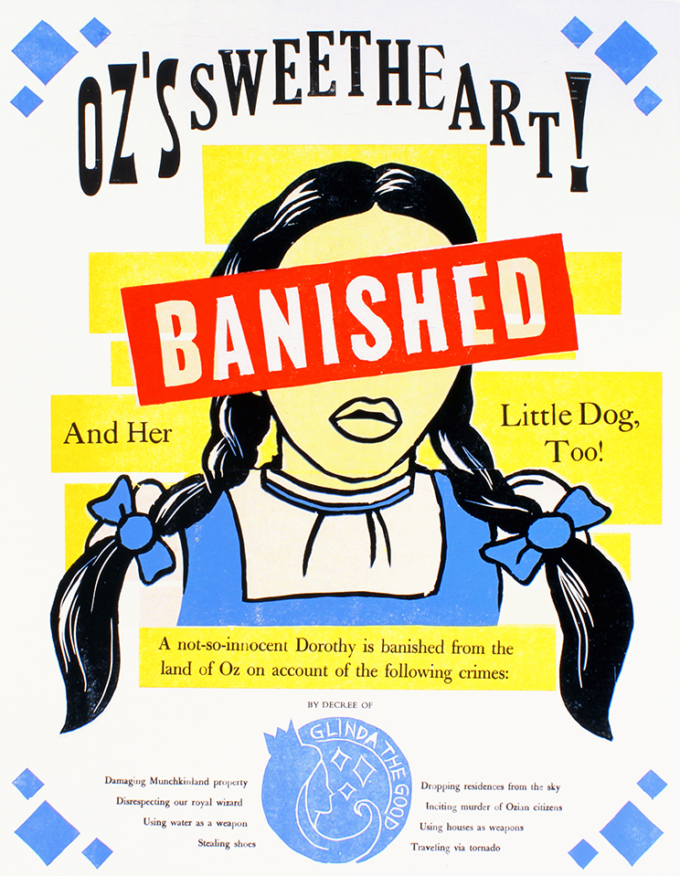

Letterpress Work: Dorothy
A broadside created through letterpress and printmaking techniques. The assignment was to create a piece following the prompt, "unwanted outlaws." Inspired by the whimsical aesthetic of the "Wizard of Oz," as well as Gregory Maguire's "Wicked," I chose to target Dorothy as an antagonist to Oz.
A project for Keith Cross' Letterpress Class at MassArt.